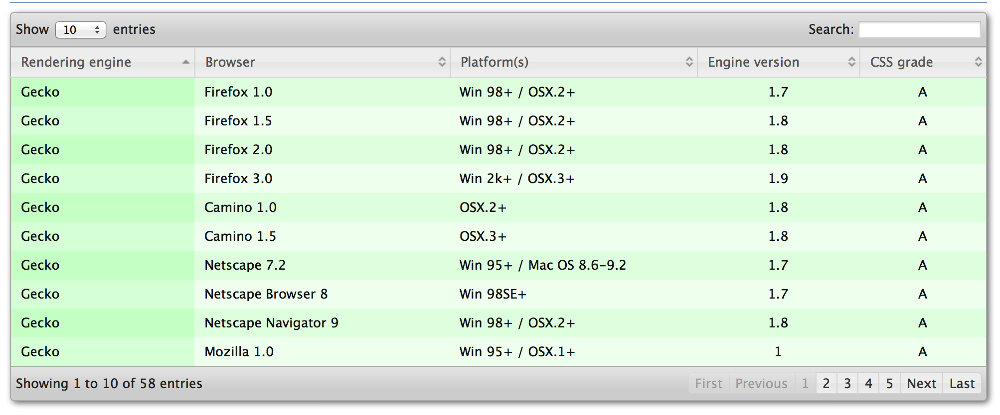

How to Build a Drupal Module
(and why you would want to ... )
Scope of this Presentation
Following Along
Presentation
- Full presentation is on Github at: http://github.com/taoti/dcww-presentation
- Also online at http://dcww.taotidev.com
- Or in PDF format at http://dcww.taotidev.com/dcww.pdf
Following Along
Code
- Full codebase is on Github at: http://github.com/taoti/dcww-may14
- Or in a zip-file at: http://dcww.taotidev.com/dcww-may14.zip
Why Build a Module?
- Because, awesome
- Career advancement
- Add new functionality to your site
- Code management
- Contribute back to the community
Basic Module
Create an .info file
name = Basic Module
description = Simple module definition
core = 7.x
package = DCWW
Basic Module
Create the .module file
/* Module Code here .. */
Javascript Module
Create an .info file
name = Javascript / CSS Module
description = Module to demonstrate implementation of custom JS code
core = 7.x
package = DCWW
Datatables.net
Javascript Module
Add files to the module in an info file
name = Javascript / CSS Module
description = Module to demonstrate implementation of custom JS code
core = 7.x
package = DCWW
scripts[] = cornify/cornify.js
;stylesheets[all][] = cornify.css
;files[] = cornify.inc.php
Javascript Module
Drupal 7 Javascript template
(function ($) {
Drupal.behaviors.[[UNIQUE NAME]] = {
attach: function(context, settings) {
}
};
})(jQuery);
Javascript Module
Bind javascript to the 'u' key
(function ($) {
Drupal.behaviors.cornify = {
attach: function(context, settings) {
$(document).keyup(function(e) {
if(e.keyCode == 85){
cornify_add();
}
});
}
};
})(jQuery);
Module Dependencies
name = Javascript / CSS Module
description = Module to demonstrate implementation of custom JS code
core = 7.x
package = DCWW
scripts[] = cornify/cornify.js
;stylesheets[all][] = cornify.css
;files[] = cornify.inc.php
dependencies[] jquery_update
dependencies[] views
Node Preprocess and Permissions
name = DCWW Javascript Node
description = Module to demonstrate implementation of node_preprocess and hook_permissions
core = 7.x
package = DCWW
hook preprocess_node()
function dcww_js_node_preprocess_node(&$vars) {
//print_r($vars);
if ($vars["type"] == "article") {
drupal_add_js(drupal_get_path("module","dcww_js")."/cornify/cornify.js");
drupal_add_js(drupal_get_path("module","dcww_js")."/cornify/cornifykeys.js");
}
}
hook_permission()
function dcww_js_node_permission() {
return array(
'access cornify' => array(
'title' => t('Access cornify'),
),
'i say so' => array(
'title' => t('Only if I say so'),
),
);
}
user_access()
function dcww_js_node_preprocess_node(&$vars) {
if ($vars["type"] == "article") {
if (user_access("access cornify") && user_access("i say so")) {
drupal_add_js(drupal_get_path("module","dcww_js")."/cornify/cornify.js");
drupal_add_js(drupal_get_path("module","dcww_js")."/cornify/cornifykeys.js");
}
}
}
FEATURES INTERMISSION
twitter widget
/* Twitter code here */
creating a new .info file
name = 4. Block Example
description = Module to demonstrate hook_block()
core = 7.x
package = DCWW
hook_block_info
function dcww_blocks_block_info() {
$blocks['daily_show_block'] = array(
'info' => t('Output block of Daily Show Tweets'),
'cache' => DRUPAL_CACHE_PER_ROLE, //Default
//'status' => 1,
//'region' => 'sidebar'
);
return $blocks;
}
hook_block_view
function dcww_blocks_block_view($delta = '') {
switch($delta){
case 'daily_show_block':
$block['subject'] = t('Sweet Tweets');
$block['content'] = // twitter code;
break;
}
return $block;
}
create a new .info file
name = 5. DCWW Menus Example
description = Module to demonstrate hook_menu()
core = 7.x
package = DCWW
hook_menu
function dcww_menus_menu() {
$items['dcww/hello-world'] = array(
'title' => 'Menu Example',
'description' => 'Simplest page output menu hook',
'page callback' => '_dcww_hello_world',
'access callback' => TRUE,
//'access arguments' => array('i say so'),
);
return $items;
}
hook_menu
function _dcww_hello_world($content = NULL) {
$base_content = t('Hello World!!');
return $base_content . $content;
}
add page callback
$items['dcww/random'] = array(
'page callback' => '_dcww_random_node',
'access callback' => TRUE,
);
random node function
function _dcww_random_node() {
$result = db_query("SELECT nid FROM {node} WHERE type = :type", array(':type' => 'page'));
$row = $result->fetchAssoc();
drupal_goto("node/".$row["nid"]);
}
last one
$items['dcww/bill-murray'] = array(
'title' => 'Bill Murray',
'page callback' => '_dcww_output_bill',
'page arguments' => array(2, 3),
//'access arguments' => array('access content'),
'access callback' => TRUE,
'weight' => 10,
);
pass args to bill
function _dcww_output_bill($height = 400, $width = 400) {
$content = " ";
return $content;
}
";
return $content;
}
More Resources
Thanks!
- Twitter: @schnippy
- Drupal.org: schnippy
- Drupal StackExchange: schnippy